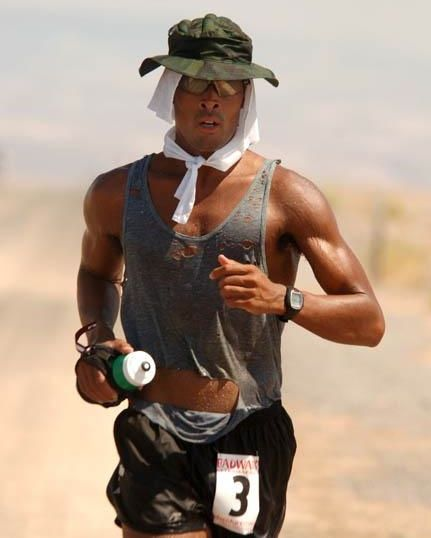
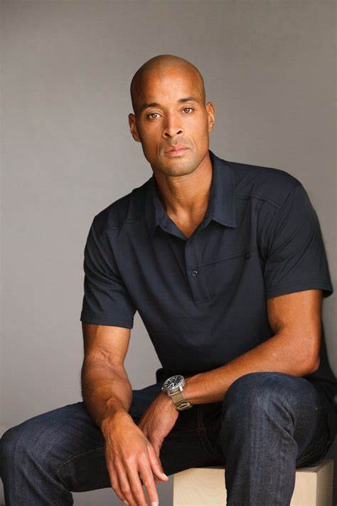

Trabalhos Famosos de David Goggins
- Livro: Can't Hurt Me (2018) - Autobiografia de David Goggins onde ele compartilha sua história de vida e lições de superação.
- Corrida: Badwater Ultramarathon (2016) - David participou de uma das corridas mais difíceis do mundo, atravessando o Vale da Morte.
- Palestrante Motivacional - David Goggins viaja pelo mundo dando palestras inspiradoras sobre resiliência e força mental.
Galeria
- 
- 